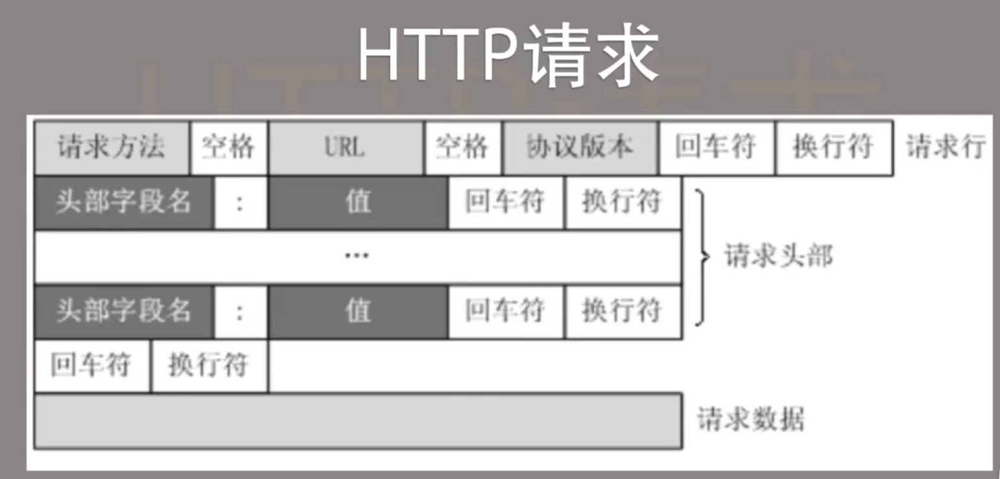
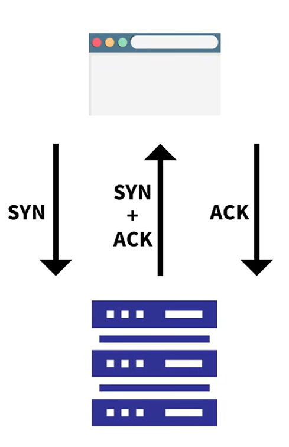

ryouのweb开发日记
URL解析
URL：协议：//域名（地址）：端口/虚拟路径？查询参数
http(默认端口：80)+ssl（安全套接字层）=https（默认端口：443）
http请求：请求行，请求头部，空行，请求数据
TCP的三次握手：SYN+ACK
HTTP状态码
1xx：指示信息，表示请求已接收，继续处理
2xx：成功，表示请求已被成功接收、理解、处理、或是被接受
3xx：重定向，表示需要进行附加操作以完成请求
4xx：客户端错误，表示请求包含语法错误或请求无法实现
5xx：服务器错误，表示服务器在处理请求的过程中发生了错误
JSON数据格式
作用：与JavaScript交互，实现前后端分离
语法：{key:value,key:value}
实质：就是一堆字符串
特点：轻量级，易于阅读，易于解析
示例：{"name":"张三","age":25,"city":["上海","广州"]}
用法：var obj = JSON.parse(jsonStr)，将json字符串转换为对象
用法：var jsonStr = JSON.stringify(obj)，将对象转换为json字符串